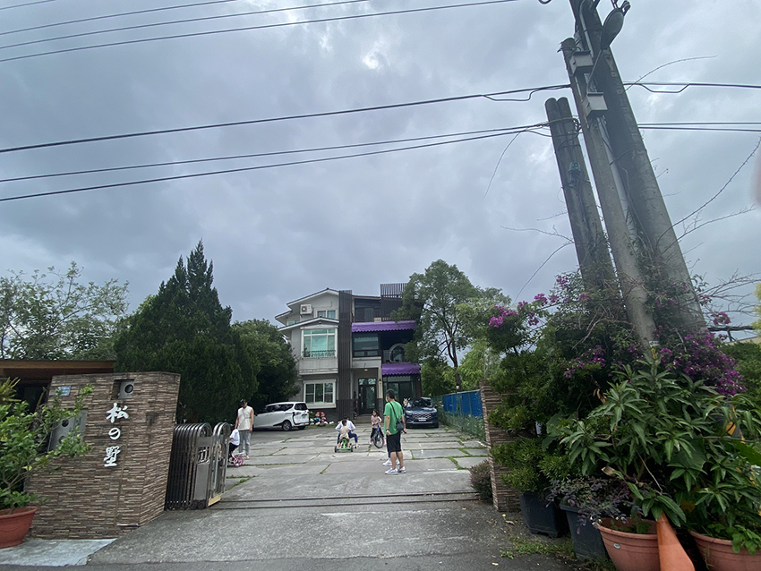
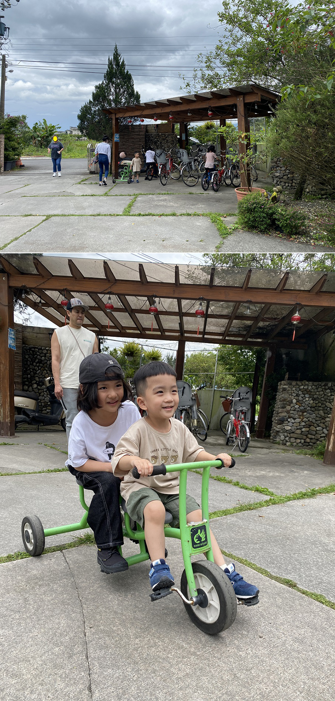
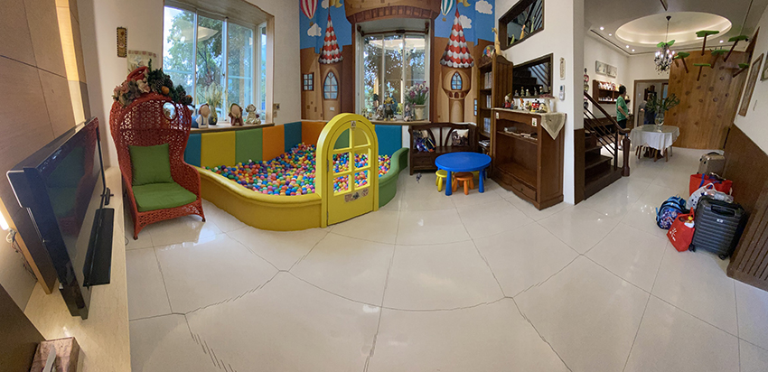
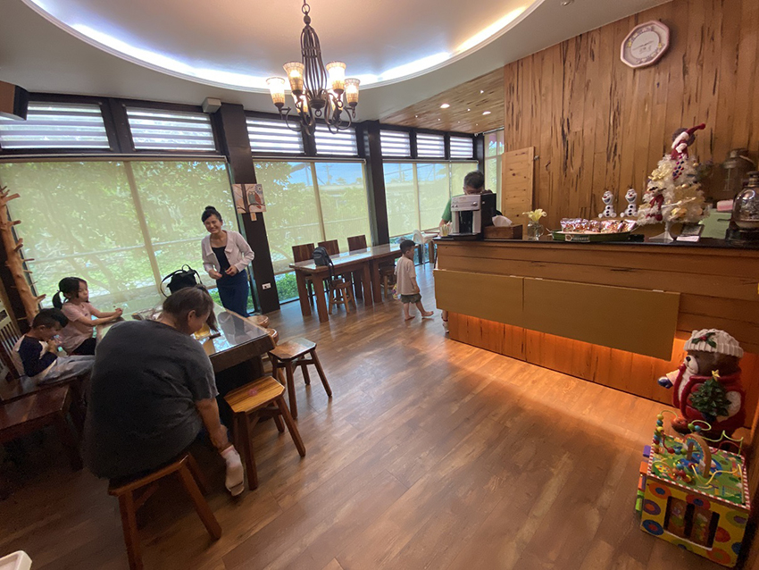
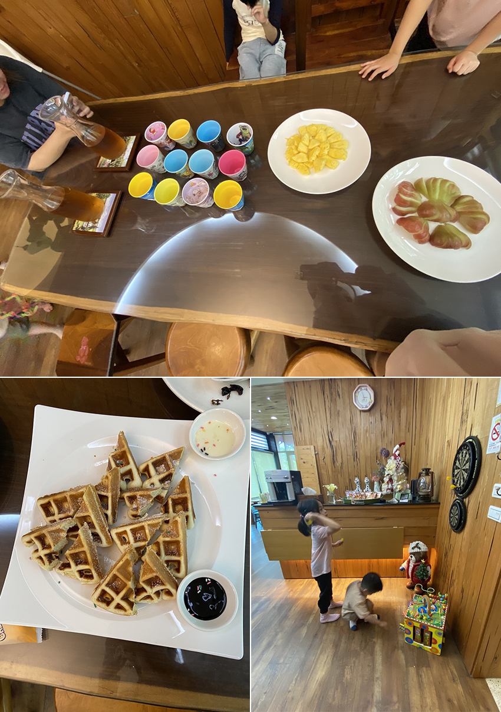
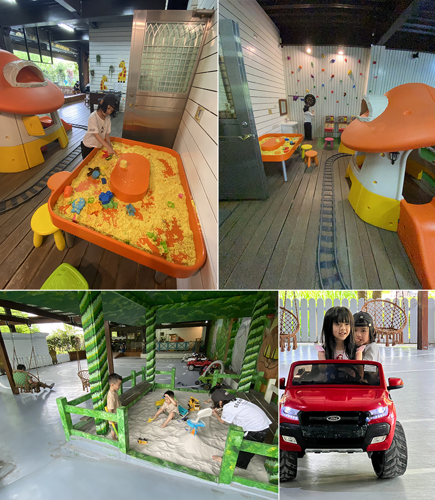
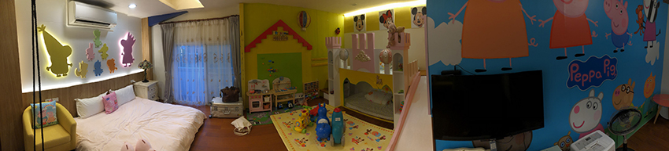
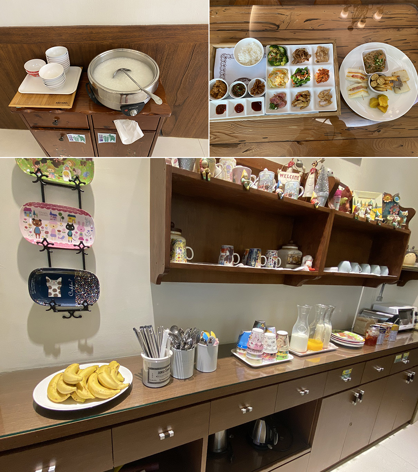

宜蘭松之墅親子民宿
翁媛│軟體技術創新處 \ OEM軟體開發部
1月份時應朋友的邀約，預計4月前去宜蘭松之墅溜滑梯親子民宿遊玩。這是朋友第三訪了，這就代表這家民宿有一定水準，因此我沒有想太多就同意帶孩子共襄盛舉，最後果真沒讓我失望。
進入正題。出發那天老天爺算賞臉，雖有下雨但不大。門口有空間可以停車，房屋後面還有正門口看不到的半戶外遊戲室。
|  | ||
| 還沒到check in的時候，車棚底下有親子腳踏車與其他車種可以讓大人小孩先消磨時間。 | ||
|  | ||
| 進到房子裡面可以看到球池跟閱讀區。 | ||
|  | ||
| 餐廳蠻大的，裡面有洗手台方便清潔手部，吧檯上也有放置泡麵可自行取用。 | ||
|  | ||
| 迎賓水果／飲料／鬆餅；還有遊戲區，飛鏢當然是安全的磁吸式。 | ||
|  |
半戶外遊戲區。設施都維護得很好，不會給人玩具墳場的感覺。之前住過宜蘭其他間親子民宿，每次都擔心多雨的宜蘭會讓孩子無法使用到戶外設施而希望落空，但松之墅的設計相當貼心，在遊戲區搭設棚子，就算下雨也不影響玩樂。
|  | ||
| 親子民宿房間裡的標配：溜滑梯跟各種玩具，還有盪鞦韆，裡面已經設計的算不錯了，有些民宿會想要跟老闆說拜託不要那麼認真佈置，沒有比較好喔。 | ||
|  | ||
| 隔天的早餐也準備得很豐盛。 | ||
|  |
最後要提的一點是老闆服務非常周到，check in 沒多久，老闆就注意到我的車子輪胎有一個沒氣，老闆娘也幫忙連絡附近熟識的店家 ，我趕緊指使老公馬上去處理好，若沒有老闆提醒，有可能影響行車安全。
【注意事項】
注意音量：整棟只有6間房間，我們這群朋友住了4間，還有2間為陌生家庭，因此若要玩得盡興就要包棟，否則必需在晚上10點前放低音量，民宿主人快 10點的時候也會來提醒。
【相關資訊】
宜蘭民宿合法編號第256號- 松之墅溜滑梯親子民宿
房型：幸福城堡
價格：禮拜六 $5,200 在宜蘭的親子民宿中算是一般價位，但同等價位的設施不一定有松之墅的等級。
整潔度：玩具／餐具／環境都維持得乾淨整潔，同行朋友特別提到之前一起去的另一間民宿，房間裡面一些邊邊角角比如床頭部分會有灰塵，松之墅沒有此問題。